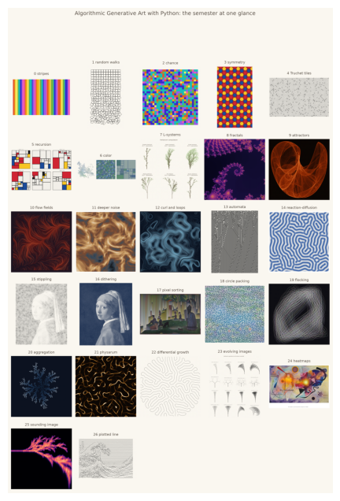
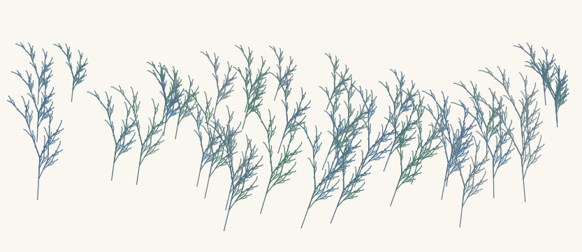
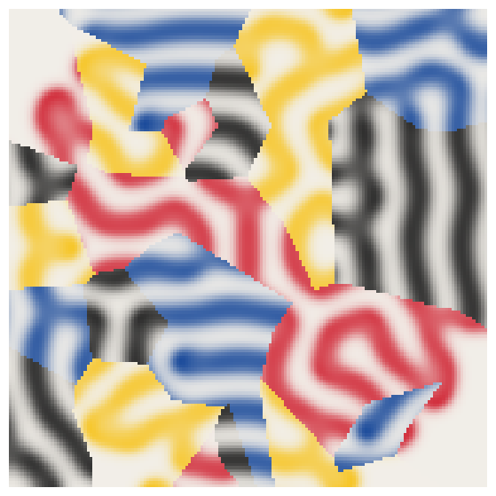
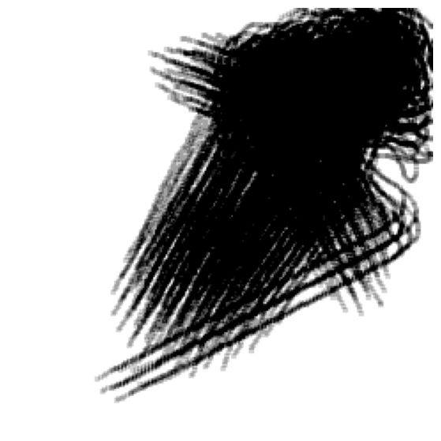
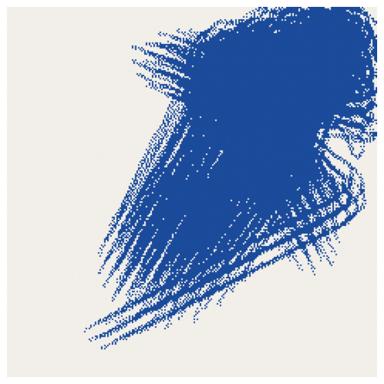
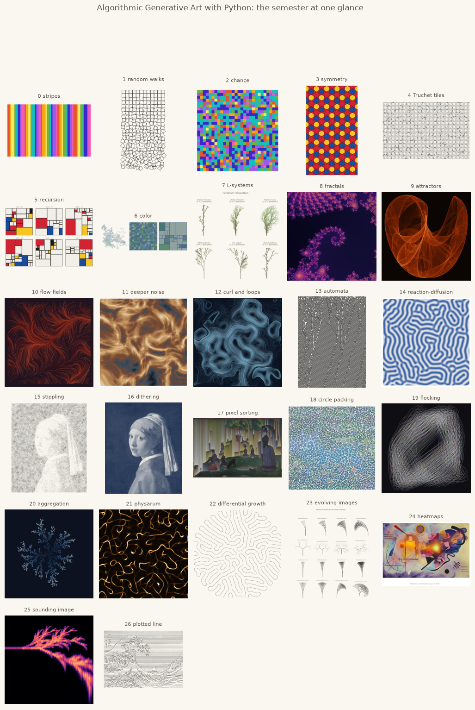

27. Synthesis: Systems, Authorship, and the Final Project#
The last chapter is mostly a conversation: about who, exactly, made the images in this book. Around the conversation sit three worked recipes for combining everything you have learned, and the brief for the final project.
Today’s destination#
The whole course on one sheet: every chapter’s showpiece, one semester of systems. Every tile below was generated by code you have read, run, and modified. By the end of today you will have three recipes for combining these systems into new ones, and the brief for the artwork of your own that closes the course.
# display this chapter's showpiece (generated by the last cell of this notebook)
import os
import matplotlib.pyplot as plt
import matplotlib.image as mpimg
showpiece_path = "../assets/outputs/ch27_showpiece.png"
if os.path.exists(showpiece_path):
image = mpimg.imread(showpiece_path)
plt.figure(figsize=(12, 8))
plt.imshow(image)
plt.axis("off")
plt.show()
else:
print("Not generated yet -- run the whole notebook once and come back.")

The Stuttgart question#
In February 1965, in the study gallery of the Technische Hochschule Stuttgart, Georg Nees showed plotter drawings made by his programs: by most countings, the first gallery exhibition of digital computer art anywhere (compArt, database entry). The philosopher Max Bense, who hosted it, had been arguing for years that aesthetics could be made rigorous; the artists in the audience were less sure. As Frieder Nake tells the story, one artist asked Nees whether he could make his machine draw the way the artist drew. Nees is said to have answered, honestly and devastatingly: yes, if you tell me how you do it. The room did not thank him, and Bense reportedly defused the moment by declaring the plotter’s work künstliche Kunst, artificial art, a category safely apart from the real thing (Nake 2005).
Sixty years later the question has not aged a day; it has only changed instruments. You have spent a semester inside it. When your chapter 7 fern grew from a handful of rewriting rules, who drew it? You chose the rules (or borrowed them from Lindenmayer), a random number generator you seeded chose the branchings, and a renderer we wrote together chose the greens. The honest answer seems to be distributed: authorship in generative art is a supply chain, and the interesting arguments are about which links deserve names on the wall label. Sol LeWitt settled his version of it in 1967 with a sentence you met in chapter 1: “the idea becomes a machine that makes the art.” (LeWitt 1967) Notice what the sentence quietly assumes: that the idea is yours, and the machine merely faithful. Chance (chapter 2), emergence in all its costumes (the ladder of Parts II and IV: rules on a grid, chemistry in a field, agents watching agents, agents freezing into form, agents wired to a field), selection itself (chapter 23, where your only act was choosing), and trained models (today’s image generators) each loosen that assumption a little more.
Three creativities#
The philosopher Margaret Boden gave this debate its most useful map. In The Creative Mind (1990) she distinguishes three kinds of creativity: combinational (familiar ideas joined in unfamiliar ways), exploratory (roaming a space of possibilities whose rules are fixed), and transformational (changing the rules of the space itself, so that previously impossible things become thinkable). The map fits this course uncannily well. Every playground section, where you swept bandwidths and seeds and weights, was exploratory creativity: the generator defined a space and you traveled it. Today’s recipes are combinational: fern plus flow field plus extracted palette. And every time you rewrote a rule rather than a parameter (a new L-system production, a new boid urge, your own kernel in chapter 16), you nudged the third and rarest kind.
Boden’s question for us: which of the three can the program do? A program explores its parameter space effortlessly, combines whatever we wire together, and transforms, so far, nothing, because it cannot yet want the rules to be otherwise. That “so far” is where the argument now lives.
The market finds it, twice#
For most of her life, Vera Molnár, who began making combinatorial drawings with a machine imaginaire in 1959 and with a real computer in 1968 (Molnár 1975; Williams 2023), was a well-kept secret of a small field. The recognition arrived compressed into her final years: a place in the main exhibition of the 2022 Venice Biennale, a late collaboration sold at Sotheby’s, a Centre Pompidou retrospective planned for her hundredth birthday. She died in December 2023, weeks short of it (Williams 2023). Ask what changed in those last years, because it was not her work, which had been rigorous for six decades.
Part of the answer is infrastructure. In 2021, platforms such as Art Blocks (launched late in 2020) attached generative programs to blockchain tokens: a collector buys a seed, the program runs once, the output is theirs (Art Blocks, about page; Hobbs 2021). Tyler Hobbs’ Fidenza series (June 2021, 999 flow-field works; the algorithm is a cousin of your chapter 10) became the emblem: sold out in minutes, with single pieces reselling within weeks for sums that had never been attached to generative art before (Hobbs, Fidenza; Gao 2023). The boom collapsed almost as quickly; by 2023 prices were a fraction of their peak (McAndrew 2024), and the lasting deposit was not the money but the audience: more people looked seriously at generative art in two years than in the previous fifty.
And then, while that wave receded, another arrived: image models that generate not from readable rules but from a billion trained weights and a sentence of English. This course took a quiet position on them in chapter 1, and you are now equipped to defend or attack it: every system in this book is legible. You can read the fern’s rules aloud, point to the line that makes disorder grow downward in Schotter (Victoria and Albert Museum, collection entry), and say precisely what you authored. A prompt is also authorship, but of a different kind, brokered by a model nobody can read. Whether that difference is fundamental or nostalgic is genuinely open, and it is the last question below.
Discussion#
When Nees’s plotter drew Schotter’s cousins, who made the artwork: Nees, the program, the plotter, or the random number generator? Does your answer change for the fern you grew in chapter 7, and if so, which ingredient changed it? And for the creatures you bred in chapter 23, was choosing enough to make you the author?
Boden’s three creativities: which did you practice most this semester? Give one concrete moment for each kind that you can point to in your own notebooks.
LeWitt: “the idea becomes a machine that makes the art.” Is a text prompt to an image model such an idea, and the model such a machine? If you feel a difference, state it without using the word “soul”.
Molnár waited half a century; Fidenza sold out in minutes. What changed: the art, the audience, or the infrastructure? What does the crash that followed suggest about which of the three was carrying the price?
Write the wall label for your favorite artwork you made this semester. What must it disclose to be honest: the seed, the code, the number of attempts you curated away, the chapters you copied from? Compare with how museums label Riley’s assistant-executed paintings (National Museum of Women in the Arts, artist profile).
Which chapter’s system felt most like a collaborator, and which most like a tool? Try to name what made the difference: randomness, emergence, or simply your own fluency with it.
In class we take these in two rounds: questions 1 to 3 now, questions 4 to 6 after the three recipes below, once you have just combined systems yourself and are about to write wall labels of your own.
Take these seriously; question 5 is a rehearsal for the statement you will write for your final project.
The combinator: three worked recipes#
Everything in this course composes, and the pattern is always the same three slots:
Something makes structure, something reshapes it, something dresses it. Below are three worked combinations, each a few cells long. We rebuild the borrowed machinery in condensed form (as chapter 6 did with its triptych) so this notebook stays self-contained; in your own project, copying the cells you need from earlier chapters is not a workaround, it is the intended technique.
Recipe 1: a meadow for Monet#
L-system ferns (chapter 7) planted along a noise breeze (chapter 10), colored from the water lilies (chapter 6). First, the L-system engine, condensed, with one new argument: the turtle’s starting heading, so a plant can grow leaning.
# chapter 7's engine, condensed: rewrite strings, then walk them as a turtle
import numpy as np
def rewrite(axiom, rules, iterations):
string = axiom
for step in range(iterations):
next_string = ""
for symbol in string:
next_string = next_string + rules.get(symbol, symbol)
string = next_string
return string
def interpret(instructions, angle_degrees, heading0=np.pi / 2, step=1.0):
x, y = 0.0, 0.0
heading = heading0 # new, in radians: a plant can start out leaning
turn = np.radians(angle_degrees)
stack, segments, depths = [], [], []
for symbol in instructions:
if symbol == "F":
x_new = x + step * np.cos(heading)
y_new = y + step * np.sin(heading)
segments.append(((x, y), (x_new, y_new)))
depths.append(len(stack))
x, y = x_new, y_new
elif symbol == "+":
heading = heading + turn
elif symbol == "-":
heading = heading - turn
elif symbol == "[":
stack.append((x, y, heading))
elif symbol == "]":
x, y, heading = stack.pop()
return segments, depths
# chapter 6's palette extractor, condensed: image in, six hex colors out
from PIL import Image
from sklearn.cluster import KMeans
from skimage.color import rgb2lab, lab2rgb
from matplotlib.colors import to_hex, to_rgb
def extract_palette(image_path, n_colors=6, width=360):
image = Image.open(image_path)
height = int(image.height * width / image.width)
small = np.asarray(image.convert("RGB").resize((width, height))) / 255
kmeans = KMeans(n_clusters=n_colors, n_init=10, random_state=0)
kmeans.fit(rgb2lab(small).reshape(-1, 3))
centers = kmeans.cluster_centers_
order = np.argsort(centers[:, 0]) # dark to light
rgb = lab2rgb(centers[order].reshape(1, n_colors, 3)).reshape(n_colors, 3)
palette = []
for center in rgb:
palette.append(to_hex(center))
return palette
monet = extract_palette("../assets/images/monet_waterlilies.jpg")
print("the Monet palette:", monet)
the Monet palette: ['#4e6a8a', '#4b7475', '#5e7888', '#5d8c70', '#5d88a8', '#90a2a0']
# the meadow: forty ferns leaning with one breeze, dressed by Monet
import sys
sys.path.append("..")
import opensimplex
from matplotlib.collections import LineCollection
from agap.helpers import PAPER, PALETTES, save_artwork, show
opensimplex.seed(8)
breeze = opensimplex.noise2array(np.linspace(0, 3, 100), np.array([0.0]))[0]
fern = {"X": "F-[[X]+X]+F[+FX]-X", "F": "FF"}
rng = np.random.default_rng(15)
fig, ax = plt.subplots(figsize=(10.5, 6), facecolor=PAPER)
for y0 in np.sort(rng.uniform(2, 26, 40))[::-1]: # back rows drawn first
x0 = rng.uniform(3, 97)
segments, depths = interpret(rewrite("X", fern, 4), 22.5,
heading0=np.pi / 2 + 0.55 * breeze[int(x0)])
segments = np.array(segments)
height = (20 - 0.4 * y0) * rng.uniform(0.85, 1.15) # front rows grow taller
segments = segments * height / segments[:, :, 1].max() + [x0, y0]
blend = np.array(depths)[:, None] / max(depths)
dark, light = monet[rng.integers(0, 3)], monet[rng.integers(3, 6)]
colors = (1 - blend) * to_rgb(dark) + blend * to_rgb(light)
ax.add_collection(LineCollection(segments, colors=colors, linewidths=0.9))
ax.set_xlim(0, 100)
ax.set_ylim(0, 42)
ax.set_aspect("equal")
ax.axis("off")
plt.show()
combo_1 = fig

One system grew the plants, a second bent them, a third painted them; no single chapter could have made this image, and every part of it is legible. Note the quiet trick: the breeze is one noise row shared by all plants, so neighboring ferns lean together like grass under the same gust.
Try it. The meadow accepts any six-color dark-to-light palette: swap monet for PALETTES["magma"] and rerun. Then raise the lean factor 0.55 until the breeze becomes a gale.
Recipe 2: a Turing quilt#
Reaction-diffusion textures (chapter 14) sewn into Voronoi patches (chapter 15): chemistry as fabric, geometry as tailor. First grow two textures, then let each Voronoi cell wear one of them in its own colors.
# chapter 14's chemistry, condensed: two Gray-Scott textures, grown fresh
from scipy.ndimage import convolve
LAPLACIAN = np.array([[0.05, 0.2, 0.05], [0.2, -1, 0.2], [0.05, 0.2, 0.05]])
def grow_texture(f, k, size=160, steps=5000, seed=1):
rng = np.random.default_rng(seed)
u = np.ones((size, size))
v = np.zeros((size, size))
center, half = size // 2, size // 10
u[center - half:center + half, center - half:center + half] = 0.5
v[center - half:center + half, center - half:center + half] = 0.25
u += rng.uniform(-0.02, 0.02, u.shape)
v += rng.uniform(-0.02, 0.02, v.shape)
for step in range(steps):
lap_u = convolve(u, LAPLACIAN, mode="wrap")
lap_v = convolve(v, LAPLACIAN, mode="wrap")
reaction = u * v * v
u = u + lap_u - reaction + f * (1 - u)
v = v + 0.5 * lap_v + reaction - (f + k) * v
return v / v.max()
coral = grow_texture(f=0.0545, k=0.062) # about ten seconds for the pair
maze = grow_texture(f=0.029, k=0.057)
# the quilt: every Voronoi cell wears one texture in its own two colors
from scipy.spatial import cKDTree
def turing_quilt(palette, n_cells=40, seed=15, size=160, textures=(coral, maze)):
rng = np.random.default_rng(seed)
seeds = rng.uniform(0, size, (n_cells, 2))
grid_x, grid_y = np.meshgrid(np.arange(size), np.arange(size))
pixels = np.stack([grid_x.ravel(), grid_y.ravel()], axis=1)
owner = cKDTree(seeds).query(pixels)[1].reshape(size, size)
paper_rgb = np.array(to_rgb(palette[-1])) # lightest color as ground
image = np.zeros((size, size, 3))
for cell in range(n_cells):
inside = owner == cell
t = textures[cell % 2][inside][:, None] # this cell's fabric
ink = np.array(to_rgb(palette[cell % (len(palette) - 1)]))
image[inside] = (1 - t) * paper_rgb + t * ink
return image
quilt = turing_quilt(PALETTES["bauhaus"])
show(quilt)

The seams need no drawing: wherever the ownership changes, the fabric and its colors change with it, and the eye stitches the boundary. The quilt is also a quiet argument about pattern: chapter 14’s textures were processes frozen mid-run, and chapter 15’s cells are pure geometry, yet sewn together they read instantly as textile, the oldest algorithmic art of all (chapter 13’s looms send their regards).
Try it. Re-cut the quilt with n_cells=120 (confetti) or n_cells=12 (banners), or dress it in PALETTES["magma"], whose last color happens to be its lightest.
Recipe 3: the flock, printed#
Chapter 19’s boids leave trails; chapter 16’s error diffusion prints them. A simulation becomes a photograph becomes a print: three chapters, three transformations, one artifact.
# chapter 19's society, condensed into one function returning all positions
def flock_history(n_boids=140, n_frames=450, size=100, seed=15,
weights=(0.25, 0.1, 0.02), radii=(4.0, 10.0)):
rng = np.random.default_rng(seed)
pos = rng.uniform(0, size, (n_boids, 2))
theta = rng.uniform(0, 2 * np.pi, n_boids)
vel = 0.7 * np.stack([np.cos(theta), np.sin(theta)], axis=1)
history = [pos.copy()]
for frame in range(n_frames):
off = pos[None, :, :] - pos[:, None, :]
dist = np.linalg.norm(off, axis=2)
np.fill_diagonal(dist, np.inf)
near = (dist < radii[1])[:, :, None]
crowd = np.maximum(near.sum(axis=1), 1)
has_neighbors = near.sum(axis=1) > 0 # True counts as 1 (chapter 20's trick)
force = (weights[0] * np.where((dist < radii[0])[:, :, None],
-off / dist[:, :, None]**2, 0).sum(axis=1)
+ weights[1] * ((near * vel[None]).sum(axis=1) / crowd - vel)
* has_neighbors
+ weights[2] * ((near * pos[None]).sum(axis=1) / crowd - pos)
* has_neighbors
+ 0.08 * ((pos < 10) * 1.0 - (pos > size - 10)))
speed = np.maximum(np.linalg.norm(vel + force, axis=1, keepdims=True),
1e-9)
vel = (vel + force) / speed * np.clip(speed, 0.45, 0.9)
pos = pos + vel
history.append(pos.copy())
return np.array(history)
history = flock_history()
# expose the flight onto a pixel canvas: a grayscale photograph of time
positions = history[250:].reshape(-1, 2) # open the shutter late: one gesture
resolution = 240
# np.histogram2d (chapter 9's census of visits): ch19 stamped, here we count
counts, _, _ = np.histogram2d(positions[:, 1], positions[:, 0],
bins=resolution, range=[[0, 100], [0, 100]]) # _ = bin edges, unused
counts = convolve(counts, np.ones((3, 3)) / 9) # ch16's blur joins the dots
photograph = 1 - np.clip(counts * 1.6, 0, 1) # 1.6 = exposure gain; 0 ink, 1 paper
show(photograph, cmap="gray")

# print it: chapter 16's error diffusion, then two colors and hard pixels
def floyd_steinberg(gray):
canvas = gray.astype(float).copy()
height, width = canvas.shape
for row in range(height):
for col in range(width):
old = canvas[row, col]
new = 1.0 if old > 0.5 else 0.0
canvas[row, col] = new
error = old - new
if col + 1 < width:
canvas[row, col + 1] += error * 7 / 16
if row + 1 < height:
if col > 0:
canvas[row + 1, col - 1] += error * 3 / 16
canvas[row + 1, col] += error * 5 / 16
if col + 1 < width:
canvas[row + 1, col + 1] += error * 1 / 16
return canvas
printed = floyd_steinberg(photograph)
combo_3 = np.where(printed[..., None] > 0.5, to_rgb("#F2EFE9"),
to_rgb("#1B4B9B"))
combo_3 = np.kron(combo_3, np.ones((9, 9, 1))) # 9x: print-size pixels
show(combo_3)

Look and compare. Three recipes, three temperaments: the meadow is pastoral (systems imitating nature imitating systems), the quilt is constructive (pure process wearing pure geometry), the print is documentary (a simulation’s biography in ink). Which slot did the most aesthetic work in each: the generator, the transformer, or the palette? There is no right answer, but your final project will force you to have an opinion.
Export your artwork#
Save whichever recipe, or variation of one, you like best; replace yourname as always. (combo_3 is an image array, so it lands at its native pixel size; pass combo_1, the meadow figure, to save that instead. And as in every chapter: all seeds above are invitations.)
# save YOUR artwork: pick a recipe output, then replace 'yourname'
saved_path = save_artwork(combo_3, "yourname", chapter=27)
saved: assets/outputs/ch27_yourname.png
The final project#
The course ends the way it began, with a system, except this time it is yours.
The task. In your group (3 to 4 people), design and implement a generative artwork that combines at least two techniques from this course. Combination is the point: a fern is chapter 7’s, but a fern drawn in stipples sampled by darkness is yours. The three recipes above are the template for how little glue code this needs.
Deliverables.
The artwork: one PNG, at least 2000 pixels on the long side (
save_artworkguarantees this for figures; for image arrays, scale withnp.kronas above). If your piece is line-based, you may add its SVG (chapter 26’s export) as an optional extra; the PNG stays mandatory.The code: the notebook or script that generates it, runnable top to bottom, seeds fixed so the submitted artwork is reproducible.
The statement: about 500 words situating the work art-historically or mathematically (which conversations from this course does it join?), including a contribution note (who did what, briefly and honestly) and a disclosure of AI-tool use (which tools, for what; using them is fine, hiding them is not).
The presentation: about 12 minutes as a group, plus discussion. Show the work, show the system, name your choices; question 5 above is the rehearsal.
Rubric.
Criterion |
Weight |
What convinces us |
|---|---|---|
Concept |
30% |
a real idea about combining systems, not two techniques stapled together |
Execution |
30% |
working, readable, reproducible code; techniques used correctly |
Aesthetic intent |
20% |
visible, defended choices: palette, composition, parameters are argued, not defaults |
Statement |
20% |
situates the work, honest contribution note and AI disclosure, ~500 words |
The mid-semester pitch. Around unit 9 or 10, each group gives a ~5 minute pitch: the concept in two sentences, the techniques you intend to combine, one sketch or reference image, and the division of labor. The pitch is not binding (projects are allowed to drift as you learn more techniques), but “we have not decided yet” is not a pitch.
Exercises#
(a) Parameter exploration: re-season a recipe. Take one of the three recipes and change its temperament without changing its structure: a winter meadow (sparser plants, a Vermeer palette, a harder lean), a silk quilt (two gentler presets from chapter 14, a pastel palette, 120 cells), a red print (different flock weights, Ben-Day red on cream). One recipe, five dials, twenty minutes.
(b) Code modification: the quilt goes to sea. turing_quilt takes any palette whose last color is its lightest, and extract_palette (recipe 1) produces exactly that from any image. Dress the quilt in the colors of the Great Wave; one line of glue is enough.
Solution
hokusai = extract_palette("../assets/images/hokusai_wave.jpg")
quilt_2 = turing_quilt(hokusai, seed=15)
show(quilt_2)
Prussian blues on cream, and the quilt suddenly reads as indigo-dyed cloth. This is the whole recipe pattern in one line: extract_palette is a palette slot, turing_quilt is a generator+transformer pair, and any image you own can now dress any system in this book. (Try the Seurat next: its extracted palette comes out surprisingly gray, which is a chapter 6 lesson in itself. What “the palette of a painting” means is not obvious; Seurat’s shimmer lived between his dots, not in them.)
(c) Creative challenge: the prototype. Build a first draft of your final project: one combination of two techniques, any quality, ugly allowed. Bring it to the gallery with a one-sentence wall label. The distance between this prototype and your final submission is where the project’s concept will be found.
Further reading#
Margaret Boden, The Creative Mind: Myths and Mechanisms (2nd ed., Routledge, 2004): the three creativities, and the strongest philosophical toolkit for arguing about machine creativity without hand-waving.
Grant D. Taylor, When the Machine Made Art: The Troubled History of Computer Art (Bloomsbury, 2014): why the art world resisted for fifty years, and what that resistance was defending.
Philip Galanter, “What Is Generative Art? Complexity Theory as a Context for Art Theory” (Generative Art conference, 2003): the definition this course has leaned on since chapter 1; read it in full now that you have made the things it describes.
Tyler Hobbs, “The Rise of Long-Form Generative Art” (2021, free on tylerxhobbs.com): a practitioner’s account of the Art Blocks moment by the maker of Fidenza, written while it happened.
References#
Art Blocks. About Art Blocks. artblocks.io/about. Founded 2020; the platform’s own description of the mint: a purchase triggers one run of the artist’s algorithm, and the never-before-seen output belongs to the collector.
Boden, M. A. (1990). The Creative Mind: Myths and Mechanisms. Weidenfeld and Nicolson. (2nd ed., Routledge, 2004.) The source of the combinational, exploratory, and transformational triad.
compArt daDA: the database of Digital Art. rot 19. Computer-Grafik, publication entry. dada.compart-bremen.de/item/publication/362. Dates and places the Nees show, February 1965, Studiengalerie of the TH Stuttgart, “the first exhibition of computer-generated algorithmic art world-wide”.
Gao, J. (2023). Fidenza: the NFT collection leading generative art revolution. DappRadar blog, 17 July 2023. dappradar.com. The market data: 999 works released on Art Blocks in June 2021 at about \(400 each, with resales above \)1 million within months.
Hobbs, T. (2021). The rise of long-form generative art. Essay, 6 August 2021. tylerxhobbs.com. The Art Blocks moment described from inside, while it happened.
Hobbs, T. (2021). Fidenza. Essay, 11 June 2021. tylerxhobbs.com/fidenza. The algorithm’s own description: a flow field the artist had worked with since 2016.
LeWitt, S. (1967). Paragraphs on conceptual art. Artforum, 5(10), 79–83. The machine sentence, verbatim.
McAndrew, C. (2024). The Art Basel and UBS Global Art Market Report 2024. Art Basel and UBS. theartmarket.artbasel.com. Documents the fall of art-related NFT sales from the 2021 peak of \(2.9 billion to \)1.2 billion in 2023, the second consecutive year of decline.
Molnár, V. (1975). Toward aesthetic guidelines for paintings with the aid of a computer. Leonardo, 8(3), 185–189. doi:10.2307/1573236. Her own account of the stepwise method and of the computer she began using in 1968.
Nake, F. (2005). Computer art: a personal recollection. In Proceedings of the 5th Conference on Creativity and Cognition (C&C ‘05). ACM. doi:10.1145/1056224.1056234. Nake’s telling of the Stuttgart opening, the artists’ challenge, and Bense’s rescue.
National Museum of Women in the Arts. Bridget Riley. Artist profile, Washington, DC. nmwa.org/art/artists/bridget-riley. “Riley supervises a workshop of assistants who aid in executing her large paintings.”
Victoria and Albert Museum. Schotter (Georg Nees, 1968–70). Collection entry, London. collections.vam.ac.uk/item/O221321. The gravel field itself, disorder growing downward.
Williams, A. (2023). Vera Molnár, pioneer of computer art, dies at 99. The New York Times, 15 December 2023. The obituary: machine imaginaire 1959, computer 1968, Venice Biennale 2022, the Sotheby’s sale, the Pompidou show planned for her centenary, death on 7 December 2023.
Appendix: the semester at one glance#
The closing cell gathers every chapter’s showpiece into one contact sheet: the whole course as a single image, and this chapter’s own showpiece. It runs automatically with Restart & Run All (it only needs the earlier chapters’ showpieces to exist in assets/outputs/, which they do if you ran the chapters).
# the contact sheet: every chapter's showpiece, one semester
import glob # glob lists files matching a pattern
sheet_labels = {
0: "stripes", 1: "random walks", 2: "chance", 3: "symmetry", 4: "Truchet tiles",
5: "recursion", 6: "color", 7: "L-systems", 8: "fractals", 9: "attractors",
10: "flow fields", 11: "deeper noise", 12: "curl and loops", 13: "automata",
14: "reaction-diffusion", 15: "stippling", 16: "dithering", 17: "pixel sorting",
18: "circle packing", 19: "flocking", 20: "aggregation", 21: "physarum",
22: "differential growth", 23: "evolving images", 24: "heatmaps",
25: "sounding image", 26: "plotted line",
}
paths = sorted(glob.glob("../assets/outputs/ch??_showpiece.png"))
paths = [p for p in paths if "ch27" not in p] # the sheet itself stays out
rows = (len(paths) + 4) // 5 # 5 tiles per row, as many rows as needed
fig, axes = plt.subplots(rows, 5, figsize=(13, rows * 2.9), facecolor=PAPER)
for ax in axes.flat:
ax.axis("off") # also blanks any unused end panels
for ax, path in zip(axes.flat, paths):
number = int(os.path.basename(path)[2:4]) # "ch08_showpiece.png" -> 8
tile = Image.open(path)
tile.thumbnail((800, 800)) # shrink: a contact sheet, not a vault
ax.imshow(tile)
ax.set_title(f"{number} {sheet_labels.get(number, '')}", fontsize=8, color="#5A5148")
fig.suptitle("Algorithmic Generative Art with Python: the semester at one glance",
fontsize=12, color="#5A5148")
fig.subplots_adjust(wspace=0.06, hspace=0.16)
plt.show()
saved_path = save_artwork(fig, "showpiece", chapter=27)

saved: assets/outputs/ch27_showpiece.png